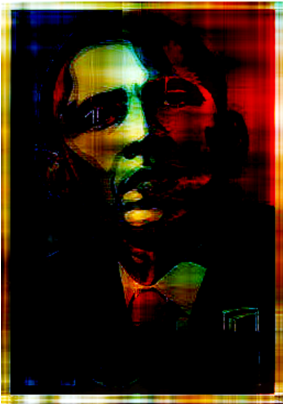
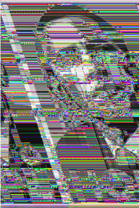
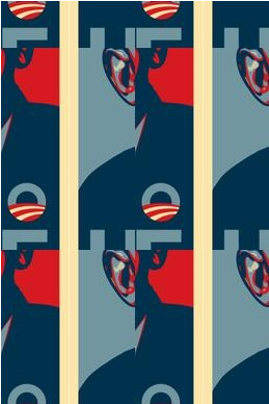
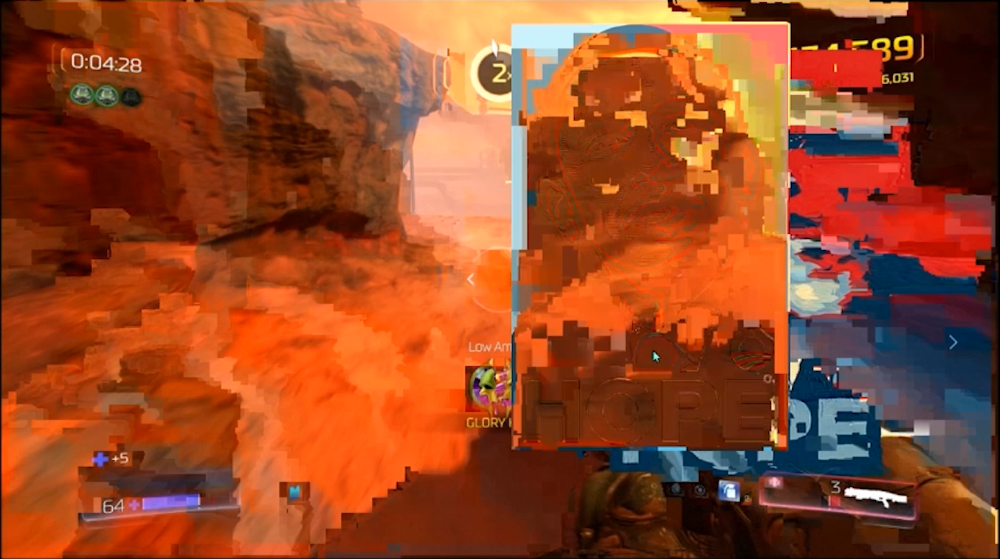
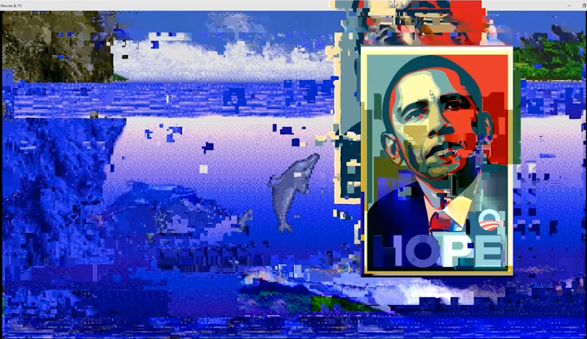
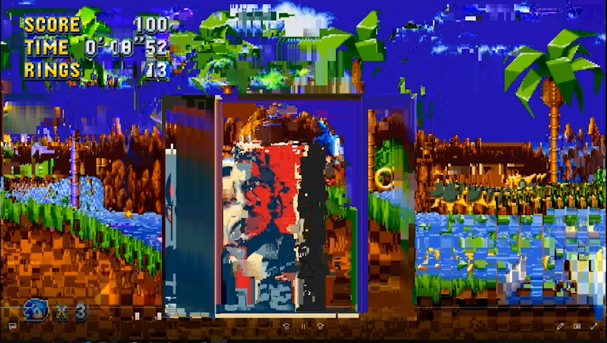
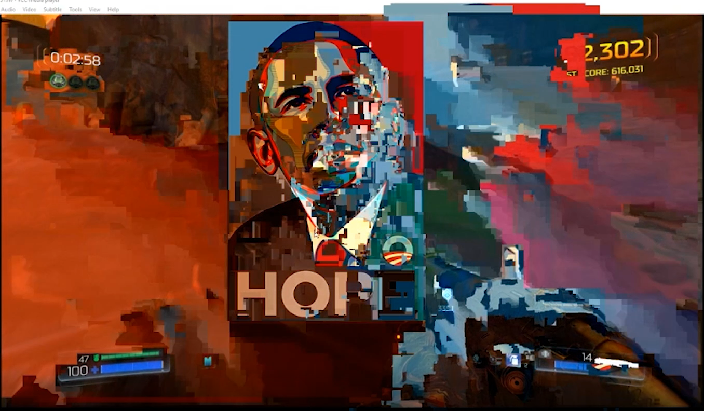

Corrupting Hope:
A Glitch-Based Approach to doing Digital Visual Research-Creation
Methoddity: Conditions for Play
Glitch, as a research-creation practice for digital visual studies, will always unfold differently for each researcher. As previously discussed, chance rules the research process and thus research must become comfortable wandering through an image’s pathways, playing with various glitch techniques, constructing unapproved and dangerous ecologies of software, and closely following an image’s becoming as it corrupts. In this section, I model what such phases of glitch-based research-creation might entail, but I do not offer a prescriptive account of glitching as a research-creation practice. Instead, I guide readers through my own creative research practice, describing along the way the techniques I deployed and insights that emerged in relation to Obama Hope. I begin by describing several experiments with creating visual glitches through already established techniques for creating visual glitches such as databending and the “GenerateMe” package. Following this discussion, I then invite others to play and build on a self-created technique I call image melding. Glitches have often been thought of a terminus for both communication and signification; however, my research-creation with Obama Hope demonstrates that as various glitches are performed on an image, it begins to show “conductive” qualities that continue to facilitate the transmission of data and cultural information.
The first phase to glitching is to wander, guided by the discursive “pathways” suggested by an image. Wandering here refers to a practice of becoming familiar with the various techniques and visual discourses that are used by practitioners in the field by navigating their various communities and collectives. Through this initial work, it begins to become apparent which communities the image does (and does not) resonate with, what kinds of values and beliefs might be amplified within the image, and which techniques will be most useful in doing so. Communities like Glitch Tool Time and r/Glitch_Art serve as an excellent starting point for inspiration and conversation that will introduce different techniques for doing digital visual research-creation with glitch. Afterwards, paying attention to the image’s formal qualities (in this case, Obama Hope’s color, layout, perspective, etc.) and what it actually depicts will further help nuance the search for communities and techniques. As a political image, for example, Obama Hope lead me to specifically hunt for collectives and individuals interested in applying glitch-effects to political images (for example, Displaced/Replaced on Facebook) who showcase specific glitch-effects that, when paired with political content, work at more effectively amplifying certain aspects of an image’s communication. Similarly, the prominence of Obama’s face in the image can work well with a technique like pixel sorting, which makes it seem as if an individual’s identity has become digitally smeared or blurred. This phase of research-creation also allows one to sample signature glitch techniques and place others’ glitch processes and remixes into conversation with their own, which creates the potential for using glitches to create connections across various different communities of practice.
Through wandering, for instance, “databending” reveal itself as a potential candidate that could work well with Obama Hope. Databending involves opening an image file (.jpg in my case) in a text editor such as Notepad++. In doing so, the application merges text and image, producing what looks like a bunch of junk characters. Databending modifies characters in the text editor by deleting, adding, and cutting/pasting characters. Like searching through glitch communities for various techniques, this also allows a practitioner to discover techniques that might work well with their potential image. But unlike the intentional, and even perhaps, planned research phase above that guides initial search for glitch techniques within various glitch communities, databending encourages discovery through play and chance-based aspects of glitch.
While databending, the researcher will meander through an image’s data. The experience is, at first, overwhelming. Bit by bit, however, the researcher will begin to understand the illegible and inscrutable characters through practice. From this perspective, the characters translate into potential actions upon the image, and their “meaning” can be grasped from how they do and do not transform an image such as Obama Hope when plugged into sensitive areas in the image data.
For example, ã\¯3n{!À5G%ýÉÌÙ{ckØöAc¸öBwT§ÅÚ}´%Ì—ˆ-׈_Òóÿ does work, and that work changes as it is anagrammatically re-arranged and connected to other data in the text editor display of Obama Hope.
From this view, Obama Hope (and digital images generally) appear akin to the necker cube: a multistable image that is both image and data. With databending, we can begin to appreciate the “shift from seeing technical objects as static entities to...temporary coalescences in fields of conflicting and cooperating forces” (Hayles 86). Obama Hope is not an image, but rather a crystallization of various actants. Some actants exert an outward force to maintain the semblance of an image and preventing it from becoming anything other than the image of Obama, whereas others allow for Obama Hope to connect with other glitch-based political discourses. Glitching the image becomes a way of “conversing” with and mobilizing the image’s digital actants. The computer and its software become co-creators revealing aspects unseen in the original Obama Hope image.
Figure 2. A video that demonstrates how various databends were applied to the Obama “Hope” poster and the tools/techniques used to create the conditions for these occurances. This shows a text editor used to open and manipulate the image data.
After exploring weird and evocative databends as well as the work of glitch communities, one can begin to explore the wide range of possible glitches by playing with various scripts. I recommend downloading tsulej's "GenerateMe" package, which is an archive of Processing scripts used to create glitchy effects that go well beyond what can be done just by databending. GenerateMe allows for the exploration of a wide range of possible video, image, and audio glitches—providing a flexible framework for experimentation and demonstrating that glitch can dissolve multimodal barriers. While using GenerateMe, for instance, I was able to engage in a more focused style of create play with pixelsorting. Pixelsorting creates an effect of motion and digitization. The fragmented, blocky streaks that emerge give a sort of "digital life" to Obama Hope, commenting on the technology, data, reality mix that Amerika gestures towards in his work. Although these scripts largely eliminate the chance-based properties of databending, the ability to deploy specific visual glitch-effects present a rhetorical opportunity to say something about the content of the image. At this stage, any glitch-effects that a researcher discovers in the first two steps can now be used with precision to see exactly how they might work to comment on and expose insights about the image.
Figure 3. A video that demonstrates how various tools in the GenerateMe package were applied to the Obama “Hope” poster and the tools/techniques used to create the conditions for these occurances. This shows Processing used to run a script that edits image data.
Above all, databending and GenerateMe demonstrate the power of file conversion--in other words, taking a file and either converting it into another file type or opening it with a different software. The images below show some of the most evocative glitch-effects achieved by converting files with various script in the GenerateMe package.
Figure 4. GenerateMe Hope 1.
Figure 5. GenerateMe Hope 2.
Figure 6. GenerateMe Hope 3.
Image Melding
While techniques such as databending and pixel sorting prove useful for research-creation, digital visual studies scholars should heed the call to misuse technologies in ways that forge alternative relationships and new meaning making opportunities. Image melding is one example of how research-creation with and through glitch can lead to productive insights about digital visual images. With image melding, I was able to embrace the chance-based aspect of glitch art--something that I had felt lacking in my experiments with GenerateMe. Image melding merges and blends images with video clips of digital games (other recorded media can be used as well). Image melding shares similarities to datamoshing, which takes two or more video clips and connects them through compression artifacts. Datamoshing, however, serves as a transition primarily connecting two clips. Image melding, on the other hand, blends an image directly into a video clip in strange ways. Whereas datamoshing connects, image melding fuses, and this fusion can (potentially) fuel research into visual images in some bizarre ways.
I explain the theoretical and methodological implications of this technique in my description of the process below. Many of these glitches are performed with games and, specifically, Ecco the Dolphin, because of personal preference—I personally enjoy Ecco the Dolphin and digital games in general as an experimental visual space (as well as its visual palette) more than the visual space offered by films. Yet, I also selected games because they give the researcher an additional layer of control over the meld. In film we cannot control the speed of individual characters on the screen or take the film in a different direction (for example, having Neo choose the blue pill instead of the red pill), and this means that there is less of an opportunity to play with what we capture in our recording and meld. Digital games, however, allow us to generate situations that are rife with visual potential for glitch-effects either in how we position characters, make the screen scroll and move, bring certain visual perspectives of the game world into view, etc.—in short, with games we can be more rhetorical in our visual deployments. One of the primary reasons I choose Devil Daggers, DOOM, or Sonic Mania, for example, is because the speed at which these games display and move visual frames allows for more interesting melds. This is, of course, not to invoke a qualitative comparison between one medium or the other. Film has as much potential for image melding as digital games, and readers are invited to make melds with all forms of moving and time-based visual media.
The first image meld occurred while streaming/recording Ecco the Dolphin using OBS. I attempted to edit the recorded footage of my stream that OBS had captured and found it saved as a .flv, which I tried to edit with Adobe Premiere. Adobe Premiere didn’t play nice with .flv, so I instead tried opening it in VLC media player version 3.0.1. and attempted to convert the .flv to the Adobe-friendly .mp4. Yet the file it produced was still buggy. I tried the process again, but this time I checked the "view file output" in VLC player that provides a display of the footage as it is being converted. Suddenly, my screen was filled with glitched footage. The video played five seconds, paused, and then replayed another five seconds until it reached the end of the video. During these five second windows, the video would lag and layer frames of the video onto each other.
Figure 7. OBS .flv to VLC Player Error.
I went back to OBS, switched the capture format to .mp4 and recorded VLC player chugging busted footage. Although this was a big step, all I had was some fascinating glitched video of gameplay. OBS, however, would allow me to record anything that was happening on my computer screen--even activities I might be doing while VLC player was playing back the glitched footage. Thus, I went back and recorded gameplay as .mp4, opened the .mp4 file and set it to play on my monitor, then I used OBS to record the recording--this time, however, I recorded it as .flv. While OBS records the recording, I took the Obama Hope image and frantically drug it around the monitor being recorded. By doing this, OBS records both the glitched game footage and the moving Obama Hope image. Opening this .flv file and converting it in VLC player shows the same visual effects, but this time those effects apply to Obama Hope and meld Obama Hope into the game footage.
Figure 8. Ecco x Hope Meld.
Analyzing Image Melds
In these videos, we encounter a sublime, chance-based aesthetic engagement that amplifies the potential rhetorics within Obama Hope through the variety of melds with the visual information of the games sampled. Certain melds are relatively minor with few distorted areas, meaning that the interaction between image and video is low; other melds, however, are almost entirely entangled, and the meld in these moments is much more significant. In this screen grab from Sonic Mania, for example, Obama Hope becomes deeply integrated into the game’s landscape while still retaining key iconic visual aspects of the original Hope image.
Analyzing Image Melds
Figure 9. Sonic Mania x Obama Hope Landscape Fuse.
Analyzing Image Melds
I describe these moments where the visual information between the video and image interchange and mix as meld moments. Meld moments can happen in many ways including ghosting (Figure 10), multilayering (Figure 11 – Hope Multilayer), expansion (Figure 12), smearing (Figure 13), fusion (Figure 9), etc. These moments can, of course, be deployed rhetorically to create visual arguments about the image, the video content, or both. In this article, however, I am solely focusing on image melding’s applications to research.
Figure 10. Hope Ghosting.
Figure 11. Hope Multilayer.
Figure 12. Hope Expansion.
Figure 13. Hope Smearing.
Meld moments are evocative because they suggest a connection (in several different ways) between the visual information of the game space and the visual information of the image (in this case, Obama Hope). And these visual exchanges are ideologically charged. In addition to gameplay, digital games’ visual and spatial design communicates themes, beliefs, and ideas. Yuji Naka, lead programmer of the original Sonic the Hedgehog series, for instance explains that he used the game to convey environmentalist themes:
In 1991, it was a very sensitive subject to talk about the environment and while I had my viewpoint, I did not speak of it. With Sonic, I was given an opportunity to express my views in a different way and did so, showing Robotnik using pollution and creating machinery which desecrates the environment and it is down to Sonic to change his ways.
Visually, many of the more environmentally friendly spaces are colored and structured to convey a “healthy” ecology that clashes against the more techno-centric design of areas that Dr. Robotnik negatively influences. As players, we encounter this information not just through what we do (beat Robotnik, free the animals, etc.), but also through the color, spatial layout, perspectives, movement speed, navigational possibilities etc. of each area. Thus, moments of melding may be used to identify moments of ideological connection between the image being melded (in this case, Obama Hope) and the ideological values expressed in the visual, spatial, and navigational design of a game. Perhaps, as we see in the Sonic Mania meld, Obama Hope implies a degree of environmentalist visual rhetoric that becomes all the more apparent as we begin to meld it with a game explicitly expressing these themes through its visual design.
Figure 14. Sonic Mania x Hope Meld.
Image melding, as a technique, also allows us to look for visual appeals that an image might not be making or might make differently. The blue environmentalism of Ecco the Dolphin, for example, is different in many ways from the environmentalism of Sonic Mania. While Obama Hope undergoes a meld with Ecco the Dolphin, the meld happens more through multilayering and fragmentation rather than the full-on fusions seen in the Sonic Mania clips. This change in connection suggests a rougher connection between the visuals, perhaps hinting at some of the conflict between the visual ideology of Obama Hope and Ecco the Dolphin. DOOM, similarly, takes on Obama Hope much differently, featuring the greatest amount of smearing and “ghosting” in which the structure of the image is retained but everything else is stripped out and replaced by visual content from the game (Figure 10). Obama Hope’s colors invoke the community to which and from which “hope” is extended: the American public. Without these colors, all that remains is the word “hope” and the portrait of an individual (Obama, in this case). While the Hope landscape fuse in Sonic Mania creates a tight connection between the image, colors, and game environment, ghosting suggests a more spectral relationship in which connections are diffuse and unclear. When ghosting, Hope operates as an abstract presence in the larger conduit of visual information--something akin to a visual super-ego or id either jamming or driving the desires manifested through the game. In DOOM’s ultra-violent gore-fest, for example, one material aspect of the Obama Hope image that we can see through ghosting is the image’s more general function as injunction directed towards the individual and their actions. Beyond its red, white, and blue ethics for the American public, Hope melded with DOOM shows that the image can also provide a disconnected (and potentially disconcerting) justification for or against various actions. For digital visual research, melding thus presents us with a way of thinking askew, often in directions that formal analyses might be unable or even hesitant to address.
Next SectionBack to Top